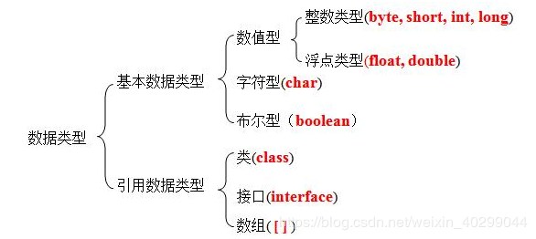

Java 是面向对象的编程语言，对象就是面向对象程序设计的核心。所谓对象就是现实世界中的实体，对象与实体是一 一对应的，也就是说现实世界中每一个实体都是一个对象，它是一种具体的概念。
对象有以下特点：
1、 可管理性：能够将功能与数据结合，方便管理。
2.、可扩展性：它使面向对象设计脱离了基于模块的设计，便于软件的修改。
3.、可重用性：它是面向对象软件开发的核心思路，提高了开发效率。面向对象程序设计的抽象、继承、封装和多态四大特点都围绕这个核心。
类：类是一个模板、一种分类，它描述一类对象的行为（方法）和状态（属性）。
对象：对象是类的一个实例（对象不是找个女朋友），有状态和行为。例如，一条狗是一个对象，它的状态有：颜色、名字、品种；行为有：摇尾巴、叫、吃等。
[public] class 类名称{
属性名称;
返回值类型 方法名称(){}
}
//例：
class Student{
private String name;
private int age;
public void teal(){
System.out.println(name+"今年"+age+"岁！");
}
}一个类要想真正的进行操作，则必须依靠对象，对象的定义格式如下：
类名称 对象名称 = new 类名称();
例：Student stu = new Student();如果要想访问类中的属性或方法（方法的定义），则可以依靠以下的语法形式：
访问类中的属性：对象.属性 ;
调用类中的方法：对象.方法();
对象是根据类创建的。在Java中，使用关键字new来创建一个新的对象。创建对象需要以下三步：
声明：声明一个对象，包括对象名称和对象类型。
实例化：使用关键字new来创建一个对象。
初始化：使用new创建对象时，会调用构造方法初始化对象。
例子：
public Dog(String name){
//这个构造器仅有一个参数：name
System.out.println("小狗的名字是 : " + name );
}
public static void main(String[] args){
// 下面的语句将创建一个Puppy对象
Dog dog = new Dog( "Tom" );
}封装的概念：
封装是面向对象思想的三大特征之一，封装就是隐藏实现细节，仅对外提供访问接口。实现细节部份包装、隐藏起来的方法。
封装的好处：
减少耦合性、隐藏信息、代码复用、安全性高、类内部的结构可以自由修改 ... 。
封装的缺点：会影响执行效率
封装之前：属性都可以直接访问和修改。
class Person{
String name;
int age;
}封装之后：
属性都不可以直接访问和修改，需通过set和get方法进行访问和修改。
class Person{
//属性是成员变量，私有化属性，使得其他对象不能直接访问属性
private String name;
private int age;
//参数及方法内定义的变量是局部变量
public void setName(String name){
this.name = name;
}
public String getName(){
return name;
}
}构造方法是类的一种特殊方法，用来初始化类的一个新的对象。Java 中的每个类都有一个默认的构造方法，它必须具有和类名相同的名称，而且没有返回类型。构造方法的默认返回类型就是对象类型本身，并且构造方法不能被static、final、synchronized、abstract 和 native 修饰。
如果一个类没有定义构造方法，则默认无参构造，如果有定义有参构造，最好再显示定义一个无参构造方法
public Student(){
// 默认无参构造方法
} public Student(String name){
this.name = name;
}public Student(String name,int age){
this.name = name;
this.age = age;
//...
}总结：
（1）构造方法名称与类名相同，没有返回值声明（包括 void）
（2）构造方法用于初始化数据（属性）。
（3）每一个类中都会有一个默认的无参的构造方法。
（4）如果类中有显示的构造方法，那么默认构造方法将无效。
（5）如果有显示的构造方法，还想保留默认构造方法，需要显示的写出来。
（6）构造方法可以有多个，但参数不一样，称为构造方法的重载。
（7）在构造方法中调用另一个构造方法，使用this(...)，该句代码必须在第一句。
（8）构造方法之间的调用，必须要有出口。
（9）给对象初始化数据可以使用构造方法或Setter方法，通常情况下，两者都会保留。
（10）一个好的编程习惯是要保留默认的构造方法。（为了方便一些框架代码使用反射来创建对象）
注意：
1、this() 不能使用在普通方法中，只能写在构造方法中。
2、this(实参列表)必须放在构造方法中的第一行。
3、在构造方法中，this(实参列表)不可递归（自己调用自己）。
在java中只有值传递，并没有所谓的引用传递
java数据类型可以分为两大类：
基本类型（primitive types）和引用类型（reference types）

| 数据类型 | 描述 | 占用字节 | 取值范围 | 默认值 |
|---|---|---|---|---|
| byte | Java中最小的数据类型 | 1个字节 | -128 ~ 127 | 0 |
| short | 短整型 | 2个字节 | -32768 ~ 32717 | 0 |
| int | 整型，用于存储整数 | 4个字节 | -2147483648 ~ 2147483647 | 0 |
| long | 长整型 | 8个字节 | -2^63 ~ 2^63-1 | 0L |
| float | 浮点型，用于存储带小数点的数字 | 4个字节 | / | 0.0f |
| double | 双精度浮点型，用于存储带有小数点的数字 | 8个字节 | / | 0.0d |
| char | 字符型，用于存储单个字符 | 2个字节 | 0 ~ 65535 | \u0000(空格) |
| boolean | 布尔类型，用于判断真或假 | 1个字节 | 仅有两个值，即true、false | false |
static关键字的作用：方便在没有创建对象的情况下来进行调用（方法/变量）。
a、使用static关键字修饰一个属性：声明为static的变量实质上就是全局变量。
b、使用static关键字修饰一个方法：在一个类中定义一个方法为static，无需本类的对象即可调用此方法（类调用）。
c、使用static关键字修饰一个类（内部类）：
声明为static的方法有以下几条限制：
它们仅能调用其他的static 方法，反过来是可以的，
它们只能访问static数据，
它们不能以任何方式引用this或super，
不允许用来修饰局部变量。
总结：被static关键字修饰的方法或者变量不需要依赖于对象来进行访问，只要类被加载了，就可以通过类名去进行访问。
可以参考：https://www.cnblogs.com/dolphin0520/p/3799052.html
继承是面向对象三大特征之一。在定义和实现一个类的时候，可以在一个已经存在的类（父类）的基础之上来进行，把这个已经存在的类（父类）所定义的内容作为自己的内容，并可以加入若干新的内容，或修改原来的方法（重写）使之更适合特殊的需要，这就是继承。
被继承的类称为父类（超类），继承父类的类称为子类（派生类），通过继承可以实现代码重用
子类拥有父类非 private 的属性、方法。
子类可以拥有自己的属性和方法，即子类可以对父类进行扩展。
子类可以用自己的方式实现父类的方法。
构造器而言，它只能够被调用，而不能被继承，可以通过使用super()进行调用，
对于继承而已，子类会默认调用父类的构造器，但是如果没有默认的父类构造器，子类必须要显示的指定父类的构造器（通过super()），而且必须是在子类构造器中做的第一件事(第一行代码)。
对于protected而言，它指明就类用户而言，他是private，但是对于任何继承与此类的子类而言或者其他任何位于同一个包的类而言，他却是可以访问的
Java 的继承是单继承，不允许多继承，但是可以多层继承（继承链）；接口可以实现多继承！
语法：
[访问权限] class 子类名 extends 父类名{
//类体定义;
}示例：
public class Dog{
private String name;
private String sex;
public void eat(){
System.out.println("吃饭");
}
}
public class HomeDog extends Dog{
//类的定义
}
public class HuskyDog extends Dog{
//类的定义
}继承的好处：
a、提高代码的复用性
b、提高代码的维护性
c、让类与类之间产生关系，是多态的前提
继承的缺点：
提高了类与类之间的耦合性
不能被继承的有哪些？
被private、static修饰的不能被继承；
构造方法不能被继承；
被final修饰的方法和类不能被继承。
静态代码块、构造代码块、局部代码块
静态代码块：在类中，方法体和代码块之外（全局作用域），使用static修饰的代码块，我们称之为静态代码块。（可以定义任意多个，顺序执行）
静态代码块随着类的第一次加载而执行，且只执行一次。
在静态代码块中，不能直接操作类中的成员变量，但是可以操作当前类中的成员变量。
静态代码块要想操作静态变量，静态变量必须在静态代码块之前声明，因为再类中它们的执行顺序是从上而下的。
构造代码块：在类中，方法体和代码块之外（全局作用域），没有使用static修饰的代码块，我们称之为静态代码块。（可以定义任意多个，顺序执行）
构造代码块随着对象的创建而执行，对象创建多少次构造代码块就执行多少次。
构造代码块优先于构造方法执行，创建对象时先执行当前类中的构造代码块，然后再执行构造方法。
局部代码块：在局部中定义的代码块。（可以定义任意多个，顺序执行）
执行顺序：
静态代码块 > 构造代码块 > 构造方法
class Test{
public String str1; //普通字段
public static String str2; // 静态字段
static{
//静态代码块
}
{
//构造代码块
}
public Test() {
//构造函数
}
public static void main(String[] args) {
{
System.out.println("局部代码块");
}
}
}public class CodeBlockTest {
public static void main(String[] args) {
Child child = new Child();
}
}
class Father {
public static String fatherStr1 = "fatherStr1（静态字段初始化值）";
public String fatherStr2 = "fatherStr2（字段初始化值）";
static {
System.out.println("父类静态代码块：" + fatherStr1);
fatherStr1 = "fatherStr1（静态代码块赋值）";
}
{
System.out.println("父类构造代码块：" + fatherStr2);
fatherStr2 = "fatherStr2（构造代码块赋值）";
}
public Father() {
System.out.println("父类构造函数块：" + fatherStr2);
fatherStr2 = "fatherStr2（构造函数赋值）";
}
}
class Child extends Father {
public static String childStr1 = "childStr1（静态字段初始化值）";
public String childStr2 = "childStr2（字段初始化值）";
static {
System.out.println("子类静态代码块：" + childStr1);
childStr1 = "childStr1（静态代码块赋值）";
}
{
System.out.println("子类构造代码块：" + childStr2);
childStr2 = "childStr2（构造代码块赋值）";
}
public Child() {
System.out.println("子类构造函数：" + childStr2);
childStr2 = "childStr2（构造函数赋值）";
}
}输出结果：
父类静态代码块：fatherStr1（静态字段初始化值）
子类静态代码块：childStr1（静态字段初始化值）
父类构造代码块：fatherStr2（字段初始化值）
父类构造函数块：fatherStr2（构造代码块赋值）
子类构造代码块：childStr2（字段初始化值）
子类构造函数：childStr2（构造代码块赋值）通过每执行一个代码块或构造函数，输出字段在上一代码块执行后的值，以此来探究对象的初始化顺序。
public class CodeBloacTest2 {
public static void main(String[] args) {
Child child = new Child();
}
}
class Father {
public static String fatherStr = "（静态字段初始化值）";
static {
System.out.println("父类静态代码块：fatherStr" + fatherStr);
fatherStr = "（静态代码块赋值）";
}
}
class Child extends Father {
public static String childStr = fatherStr;
static {
System.out.println("子类静态代码块：childStr = fatherStr" + childStr);
childStr = "（静态代码块赋值1）";
}
}输出结果：
父类静态代码块：fatherStr（静态字段初始化值）
子类静态代码块：childStr = fatherStr（静态代码块赋值）我们在子类静态字段childStr初始化的时候，赋的是父类静态字段fatherStr的值。由输出结果可知，childStr初始化后的值是父类静态代码块执行后赋予fatherStr的值。由此可知两者的执行顺序为：父类静态代码块 > 子类静态字段初始化
结论：
static字段、代码块的执行顺序优先于非static字段、代码块。这是因为在静态域是属于类的，在类加载后就一直存在；而普通域需要创建对象才能访问。而在创建对象时，需要先加载父类，然后再加载子类，因此父类的静态字段初始化和静态代码块执行先于子类。
引用：https://www.jb51.net/article/111157.htm
方法重载是 Java多态性的表现。在 Java 语言中，在同一个类中有多个（一个以上）名称相同的方法，但它们的参数列表各不相同（即参数个数或类型不同），这种情况被称为方法的重载。
方法重载有两种情况：普通方法的重载和构造方法的重载。
重载遵循的规则：
在Java中，子类中的方法可以与父类中的某个方法的名称和参数完全相同，通过子类创建的实例对象调用这个方法时，将调用子类中的定义方法，这相当于把父类中定义的那个完全相同的方法给覆盖了，这就是方法的重写。方法重写又称方法覆盖。
在子类和父类中，重写方法后，在调用时，以创建的对象类型为准，会调用谁的方法。
重写遵循的规则：
重载（Overload）与重写（Override）的区别？？？
this关键字指向的是当前对象的引用。
调用类中的属性：this.属性名称，指的是访问类中的成员变量，用来区分成员变量和局部变量（重名问题）。
调用类中的方法：this.方法名称，用来访问本类的成员方法。
调用类构造方法：this(); 访问本类的构造方法，()中可以有参数，如果有参数，就是调用指定的有参构造。
public Num_Min(int num1, int num2) {
this.num1 = num1;
this.num2 = num2;
}
public Num_Min(int num1, int num2, int num3) {
this(num1,num2); // 调用类中的构造方法
/*this.num1 = num1;
this.num2 = num2;*/
this.num3 = num3;
}为什么this(实参列表)和super(实参列表)必须放在第一行？
核心：在一个类中，可能有很多个构造方法，但是肯定有一个构造方法没有显示的使用this(实参列表)，因为构造方法不能递归！
super(实参列表)：保证子类对象访问父类成员变量之前已经完成了对父类对象的初始化工作！
this(实参列表)：保证父类初始化的唯一性！
可以理解为对父类的引用，使用super来调用父类的属性，方法，和构造方法
super可以完成以下的操作：
a、使用super调用父类中的属性，可以从父类实例处获得信息。
b、使用super调用父类中的方法，可以委托父类对象帮助完成某件事情。
c、使用super调用父类中的构造方法（super(实参)形式），必须在子类构造方法的第一条语句，调用父类中相应的构造方法，若不显示的写出来，默认调用父类的无参构造方法，比如：super();
final的含义：最终的，不可变的。
final可以修饰局部变量，也可以修饰属性（成员变量和静态变量）、方法（成员方法和静态方法）和类 ，但是不能修饰构造方法！
使用final关键字完成以下的操作：
a、使用final关键字声明的变量，我们称之为常量，必须对该值初始化操作。
当final修饰一个基本数据类型时，表示该基本数据类型的值一旦在初始化后就不能发生变化；
如果final修饰一个引用类型时，在对其初始化之后便不能再让其指向其他对象了，但该引用所指向的对象的内容是可以发生变化的
b、使用final关键字声明的方法
该方法为最终方法，且只能被子类继承，但是不能被子类重写。
c、使用final关键字声明的类
该类就转变为最终类（不可变的类），fianl修饰的类无法被继承。
d、在方法参数中使用final，在该方法内部不能修改参数的值。
当final变量是基本数据类型以及String类型时，如果在编译期间能知道它的确切值，则编译器会把它当做编译期常量使用，不过要注意，只有在编译期间能确切知道final变量值的情况下，编译器才会进行这样的优化
引用变量被final修饰之后，虽然不能再指向其他对象，但是它指向的对象的内容是可变的。
可以参考：https://www.cnblogs.com/xiaoxi/p/6392154.html
多态就是指程序中定义的引用变量所指向的具体类型和通过该引用变量发出的方法调用在编程时并不确定，而是在程序运行期间才确定。就是不用修改源程序代码，就可以让引用变量绑定到各种不同的类实现上，从而导致该引用调用的具体方法随之改变，即不修改程序代码就可以改变程序运行时所绑定的具体代码，让程序可以选择多个运行状态，这就是多态性。
多态存在的三个必要条件：
（1）继承
（2）重写
（3）父类引用指向子类对象
多态的优点
消除类型之间的耦合性、可替换性、可扩充性、灵活性、简化性等。
对象的多态性：
对象多态性是从继承关系中的多个类而来，
向上转型：将子类实例转为父类引用
格式：父类 父类对象 = 子类实例 ; // 自动转换
以基本数据类型操作为例：int i = ‘a' ;
（因为char的容量比int小，所以可以自动完成）
向下转型：将父类实例转为子类实例
格式：子类 子类对象 = (子类)父类实例 ; // 强制转换
以基本数据类型操作为例：char c = (char)97;
（因为整型是4个字节比char 2个字节要大，所以需要强制完成）
a、方法的重载与重写就是方法的多态性表现
b、多个子类就是父类中的多种形态
c、父类引用可以指向子类对象，自动转换
d、子类对象指向父类引用需要强制转换（注意：类型不对会报异常 ClassCastException）
e、在实际开发中尽量使用父类引用（更利于扩展）
指向子类的父类引用由于向上转型了，它只能访问父类中拥有的方法和属性，而对于子类中存在而父类中不存在的方法，
该引用是不能使用的，尽管是重载该方法。若子类重写了父类中的某些方法，在调用该些方法的时候，必定是使用子类中定义的这些方法（动态连接、动态调用）。
例如：
class A{
void fun1(){}
void fun2(){}
}
class B extends A{
void fun1(String a){} //重载fun1
void fun2(){} //重写fun2
}
class C{
public static void main(String[] args){
A a = new B();
a.fun1(); //这里会调用A类的fun1方法，由于向上转型，B的fun1(String a) 会被丢弃
a.fun2(); //这里调用B的fun2方法，由于是new 的B对象，而B重写了fun2，所以会调用B的fun2
}
}对于面向对象而言，多态分为编译时多态和运行时多态。其中编辑时多态是静态的，主要是指方法的重载，而运行时多态是动态的，它是通过动态绑定来实现的，也就是我们所说的多态性。
java实现多态有三个必要条件（继承、重写、向上转型）：
继承：在多态中必须存在有继承关系的子类和父类。
重写：子类对父类中某些方法进行重新定义，在调用这些方法时就会调用子类的方法。
向上转型：在多态中需要将子类的引用赋给父类对象，只有这样该引用才能够具备技能调用父类的方法和子类的方法
基于继承实现的多态：
继承是通过重写父类的同一方法的几个不同子类来体现的
对于引用子类的父类类型，在处理该引用时，它适用于继承该父类的所有子类，子类对象的不同，对方法的实现也就不同，
执行相同动作产生的行为也就不同。
基于接口实现的多态：
指向接口的引用必须是指定这实现了该接口的一个类的实例程序，在运行时，根据对象引用的实际类型来执行对应的方法。
instanceof是用于检查对象是否为指定的类型，通常在把父类引用强制转换为子类引用（==向下转型==）时要使用，以避免发生类型转换异常（ClassCastException）。
语法格式如下：
obj instanceof class|interface作用：判断instanceof左边的对象（obj）是否是instanceof右边的实例。
注意点:
“obj”可以是对象，也可以是null
instanceof属于二元运算符，返回的结果为boolean类型。 当“obj”是“class(类)|interface(接口)”的实例，则返回结果为true，否则返回结果为false！示例：
if(animal instanceof dog){
//...
}该语句一般用于判断一个对象是否为某个类的实例，是返回true，否返回false
instanceof编译和运行方面进行分析：
instanceof编译时特点
右边的“类或接口”是左边“对象”的父类、本身类和子类时，编译通过，否则编译失败！
本身类：此处的本身类指的就是“编译时”对应的类。
Animal animal = new Dog(); -->本身类就是Animal
当左边“对象”不为null的时候
右边的类或接口是左边对象的父类、本身类时，这是返回结果就是true。
右边的类或接口是左边对象的兄弟类、子类时，这是返回结果就是false。
本身类：此处的本身类指的就是“运行时”对应的类。
Animal animal = new Dog(); -->本身类就是Dog
// 编译时 运行时
Animal animal = new Dog();
// 编译时：本身类 运行时：本身类的父类
System.out.println(animal instanceof Animal); // true
// 编译时：本身类的子类 运行时：本身类
System.out.println(animal instanceof Dog); // true
// 编译时：本身类的子类 运行时：本身类的子类
System.out.println(animal instanceof SmallDog); // false
// 编译时：本身类的父类 运行时：本身类的父类
System.out.println(animal instanceof Object); // true
// 编译时：本身类的子类 运行时：本身类的兄弟
System.out.println(animal instanceof Cat); // false
System.out.println(null instanceof Animal); // false
System.out.println(animal instanceof String); // 编译时：根本身类没联系（报异常）多态情况下操作成员变量和成员方法的特点：
// 编译时 运行时
Animal animal = new Dog(); 成员变量特点：
编译时：编译看左边，也就是看“编译类型”中是否包含该成员变量。
运行时：运行看左边，也就是执行“编译类型”中的成员变量。
核心：编译和运行都看左边（编译类型）。
成员方法特点：
编译时：编译看左边，也就是看“编译类型”中是否包含该成员方法。
运行时：运行看右边，也就是执行“运行类型”中的成员方法。
核心：编译看左边（编译类型），运行看右边（运行类型）。
抽象类的基本概念：
（1）很多具有相同特征和行为的对象可以抽象为一个类。
（2）使用abstract关键字声明的类为抽象类。
定义一个抽象类：
abstract class Animal{
public abstract void move();
}
abstract class Person extends Animal{
private String name;
//...
public abstract void eat();//抽象方法
}抽象类的规则：
注意：abstract关键字不能和private、final、static关键字共存！
接口的定义语法格式：
// 接口的定义
[权限修饰符] interface 接口名称 [extends 父类接口1, 父类接口2, ...] {
// 声明变量（静态全局的）
// 抽象方法
// JDK1.8以后，还可以定义静态方法和default修饰的成员方法
}
// 接口的实现
[修饰符] class 实现类 [extends 父类] interface 接口1, 接口2, ... {
// 重写接口中的方法
}接口特性
1、接口中每一个方法也是隐式抽象的,接口中的方法会被隐式的指定为 public abstract（只能是 public abstract 修饰，其他修饰符都会报错）。
2、接口中可以含有变量，但是接口中的变量会被隐式的指定为 public static final 变量（并且只能用 public 修饰，其他修饰符都会报错）。
3、接口中的方法是不能在接口中实现的，只能由实现接口的类来实现接口中的方法。
示列：
interface Eat{
/* public abstract */ void eat(); //默认为public abstract void eat();
/* public static final */ int NUM = 10;
}
public interface Sleep extends Eat{
// 默认为抽象方法
/* public abstract */ void sleep();
// JDK1.8以后，我们还可以定义静态方法和default修饰的成员方法
public static void staticMethod() {
System.out.println("静态方法");
}
default void method() {
System.out.println("成员方法");
}
}接口的使用规则：
（1）定义一个接口，使用【interface】关键字
（2）一个具体类实现接口使用【implements】关键字
（3）接口可以继承多个接口：extends 接口1, 接口2, …
（4）接口不能被实例化
（5）接口不能有构造方法
（6）一个类可以实现多个接口
（7）抽象类实现接口可以不实现接口的方法
（8）在接口中定义的方法没有声明 访问修饰符，默认为public
（9）在一个接口中，只能定义常量、抽象方法，JDK1.8后可以定义默认的实现方法
java8新增：
（1）增加了default方法和static方法,这两种方法完全可以有方法体
（2）default方法属于实例,static方法属于类(接口)
（3）接口中的静态方法不会被继承,接口中的静态变量会被继承
public interface IUser {
static void say() {
System.out.println("say_" + IUser.class);
}
default void eat() {
System.out.println("eat_" + IUser.class);
}
}接口与抽象类的区别？？？